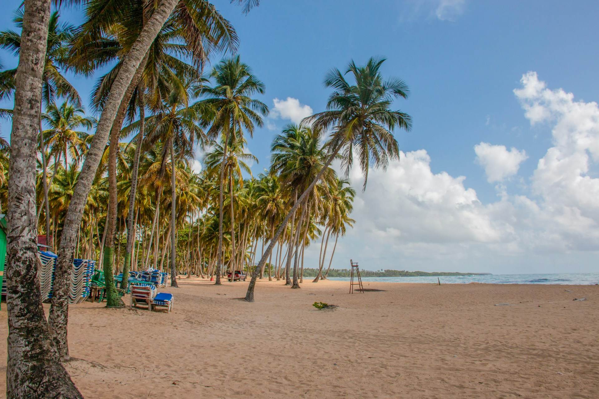
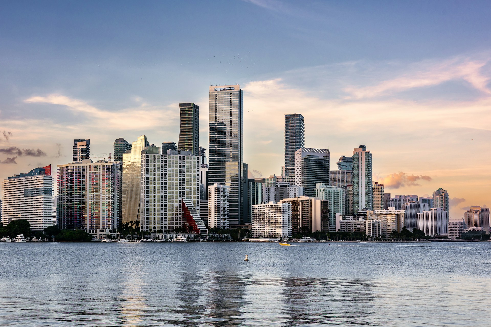

Crandon Park
Dos millas de playa de arena blanca. Sede de tenis mundial. En Key Biscayne. Two miles of white sand beach. World tennis venue. On Key Biscayne.
En el mismo parque donde Agassi, Sampras y Federer lucharon por el Miami Open, existe una playa de dos millas de arena blanca donde nadie te molesta. Crandon Park es la paradoja perfecta de Key Biscayne: mundialmente famoso por el tenis, secretamente perfecto para la gente que prefiere el mar a los rankings.
In the same park where Agassi, Sampras and Federer battled for the Miami Open, there exists a two-mile stretch of white sand beach where nobody bothers you. Crandon Park is Key Biscayne's perfect paradox: world-famous for tennis, secretly perfect for people who prefer the sea to the rankings.
de playa de arena blanca con aguas turquesas y poco oleaje — de las mejores playas de todo Miami-Dade
of white sand beach with turquoise, low-wave waters — among the best beaches in all of Miami-Dade
Galería
Gallery


¿Cuánto sabes de Crandon Park? How much do you know about Crandon Park?
5 preguntas · 2 minutos · Aprende algo nuevo 5 questions · 2 minutes · Learn something new
¿Qué puedes hacer aquí? What can you do here?
Playa y Natación Beach & Swimming
- 2 millas de arena blanca y aguas turquesas 2 miles of white sand and turquoise waters
- Poco oleaje — perfecta para niños y familias Low waves — perfect for children and families
- Área de natación designada con vigilante Designated swimming area with lifeguard
- Zona norte más tranquila (menos turistas) Northern area quieter (fewer tourists)
Tenis y Golf Tennis & Golf
- Canchas del Miami Open disponibles para el público Miami Open courts available to the public
- Golf 18 hoyos con vistas a la bahía 18-hole golf with bay views
- Reserva canchas de tenis en línea Reserve tennis courts online
- Academia de tenis para niños y adultos Tennis academy for kids and adults
Kayak y Naturaleza Kayak & Nature
- Kayak en la costa de Key Biscayne Kayaking along Key Biscayne coast
- Avistamiento de tortugas marinas (mayo–oct) Sea turtle spotting (May–Oct)
- Sendero de naturaleza por la zona norte Nature trail through the northern area
- Observación de aves en área de manglares Birdwatching in mangrove area
Picnic y Camping Picnic & Camping
- Amplias áreas de picnic con mesas Large picnic areas with tables
- Parrillas disponibles sin reserva Grills available without reservation
- Camping disponible con reserva previa Camping available with prior reservation
- Áreas de juego para niños Children's play areas
Antes de ir — lo que necesitas saber Before you go — what you need to know
🎒 Qué llevar What to bring
- 🏖️ Toalla y traje de baño 🏖️ Towel and swimsuit
- ☀️ Protector solar SPF 50+ (alta exposición solar) ☀️ SPF 50+ sunscreen (high sun exposure)
- 💧 Agua y snacks — restaurante limitado 💧 Water and snacks — limited restaurant
- 🎾 Raqueta si juegas tenis 🎾 Racket if playing tennis
- 📷 Cámara para las tortugas (mayo–oct) 📷 Camera for turtles (May–Oct)
- 💵 Efectivo para golf y canchas 💵 Cash for golf and courts
⚠️ Reglas importantes Important rules
- 🐢 No molestar ni fotografiar de cerca a las tortugas en temporada 🐢 Don't disturb or closely photograph turtles in season
- 🚫 No hogueras en la playa 🚫 No campfires on the beach
- 🐕 Perros no permitidos en la playa 🐕 Dogs not allowed on the beach
- 🚗 Estacionamiento limitado en verano 🚗 Limited parking in summer
- ⚽ Fútbol y deportes solo en áreas designadas ⚽ Football and sports only in designated areas
📅 Cuándo ir When to go
Información práctica Practical information
Entrada Entry fee
$8/vehículo Golf: $45–$65/ronda · Canchas tenis: $6/hora Golf: $45–$65/round · Tennis: $6/hourHorarios Hours
8am–Sunset Golf y canchas de tenis tienen horarios propios Golf and tennis courts have their own hoursCómo llegar Getting there
~25min de Miami ~25min from Miami 4000 Crandon Blvd, Key Biscayne (Rickenbacker Causeway)Mejor época Best season
Nov – Abr Temporada ideal · tortugas mayo–oct Ideal season · turtles May–OctTip local Local tip
Para evitar el tráfico de la Rickenbacker Causeway en verano, llega antes de las 9am. Los fines de semana de verano el acceso puede tardar 30+ minutos en abrirse. Entre semana es perfecto. To avoid Rickenbacker Causeway traffic in summer, arrive before 9am. On summer weekends access can take 30+ minutes to open. Weekdays are perfect.El directorio outdoor de Miami para el público hispanohablante Miami's outdoor directory for the Spanish-speaking audience
Listamos los mejores destinos de aventura de South Florida en español e inglés. Suma tu negocio — tours, alquileres, escuelas de buceo, guías de pesca — y aparece frente a quienes planean su próxima salida a Crandon Park. We list South Florida's best adventure spots in Spanish and English. Add your business — tours, rentals, dive schools, fishing guides — and show up in front of people planning their next trip to Crandon Park.